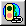

良い人の アイコン．
良い人の アイコン．
こまった人の アイコン．
トップ・ページ の表示． 同一・ウィンドウ・表示．
同一・ウィンドウ・表示． 別ウィンドウ・表示．
別ウィンドウ・表示． 同一・ウィンドウ・ヘルプ．
同一・ウィンドウ・ヘルプ． 別ウィンドウ・ヘルプ．
別ウィンドウ・ヘルプ． 同一・ウィンドウ の注意書き．
同一・ウィンドウ の注意書き．|
Mr. Pandora の ヘッダー． |
|
良い人の ヘッダー． |
|
こまった人の ヘッダー(^_^;) |
|
Mr. Pandora の コメント． |
|
メイン・テキスト． |